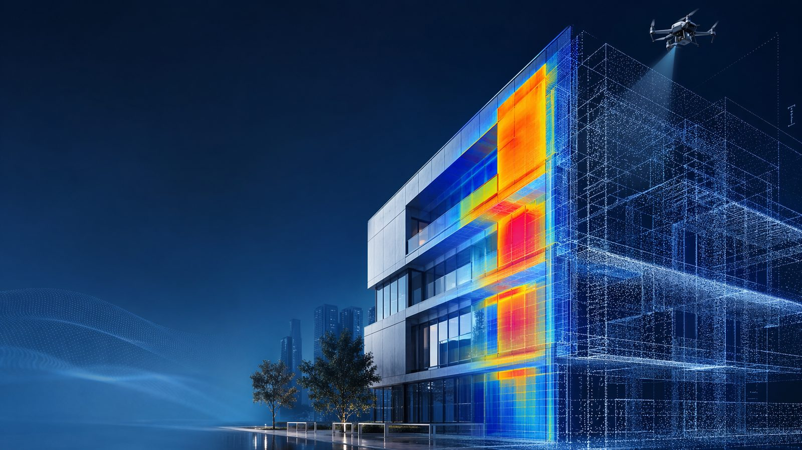
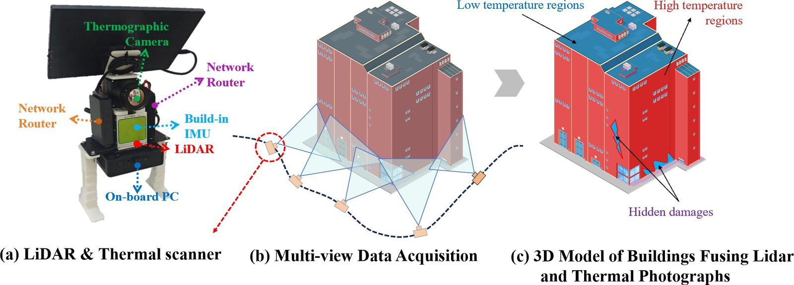
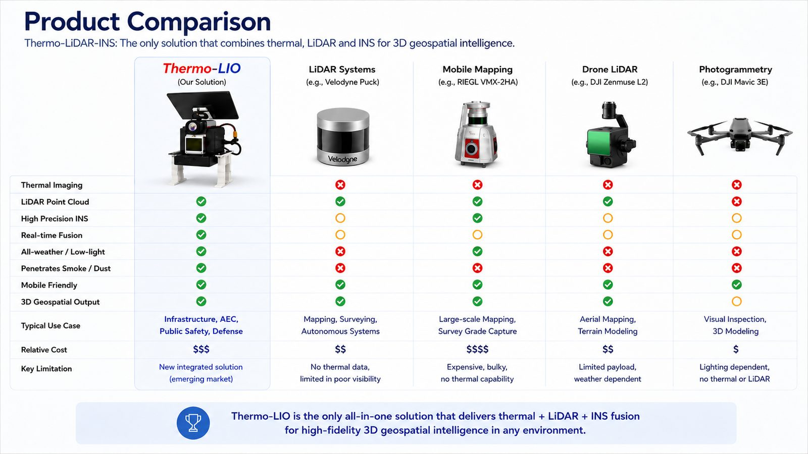
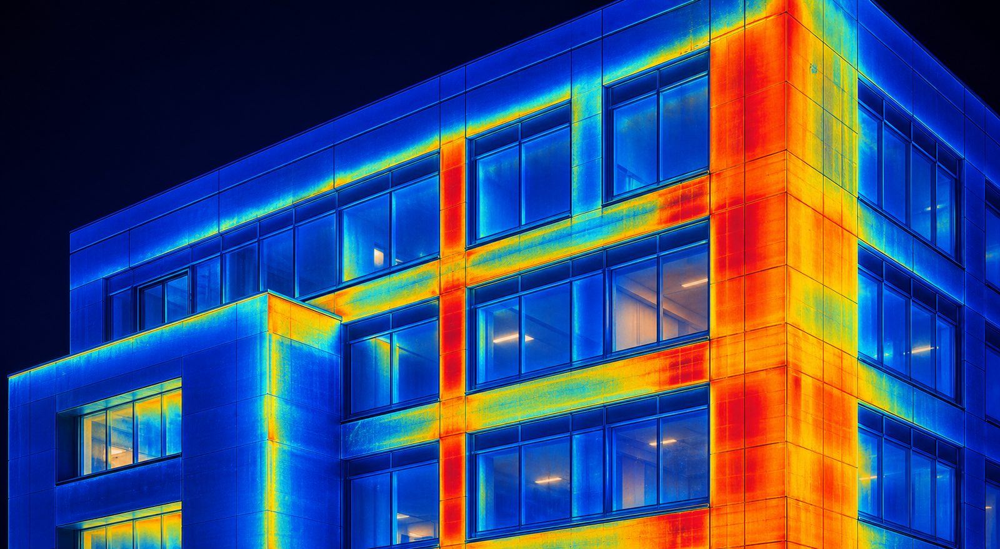
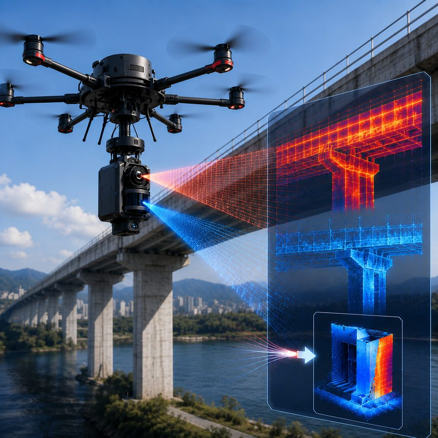
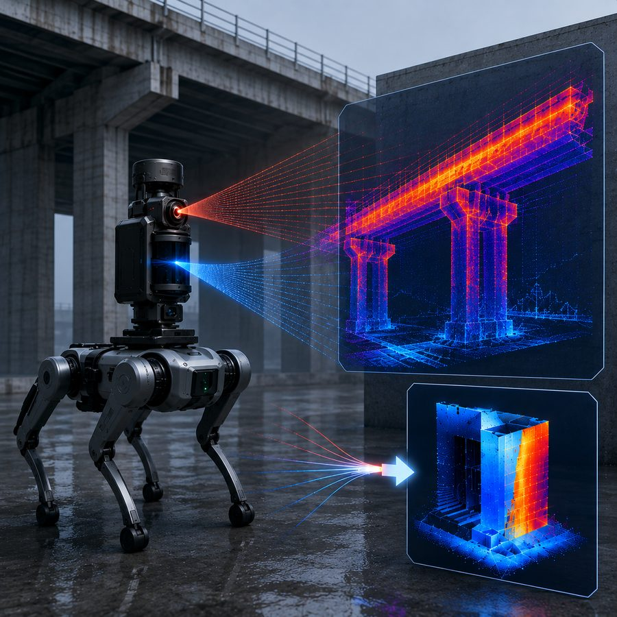
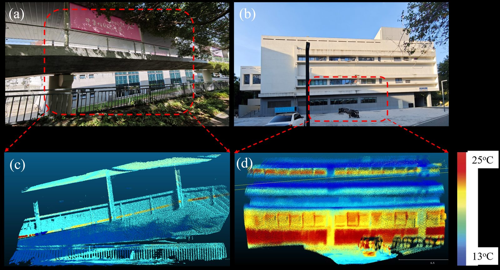
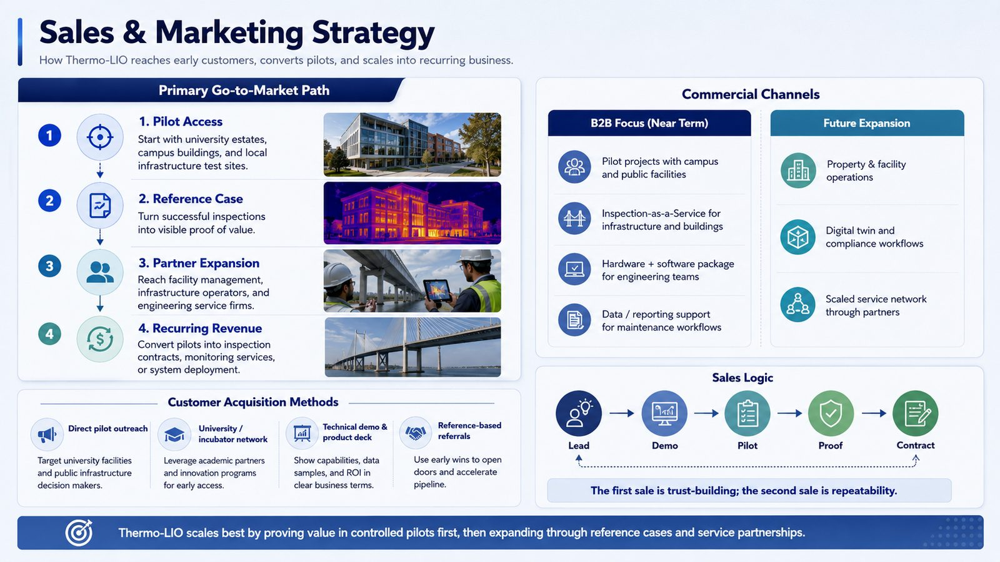
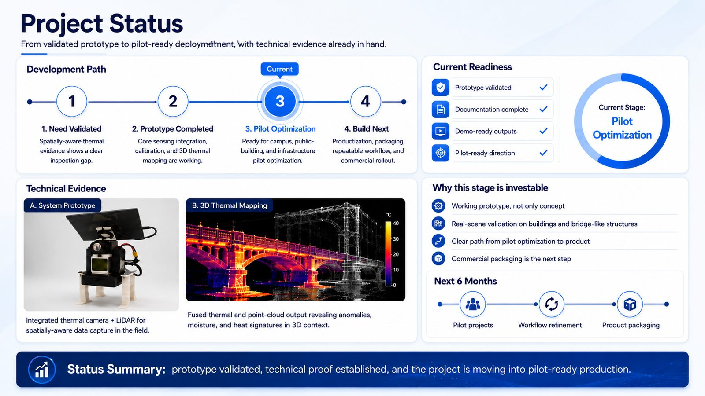
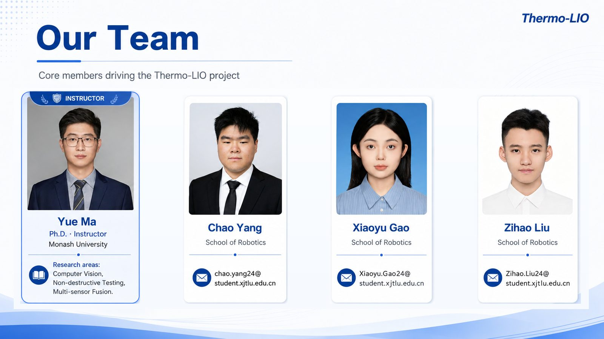

维修发现滞后
小型热异常如果没有及时定位，后续可能演化为结构修复、能耗损失和安全风险。

Commercial Gap
小型热异常如果没有及时定位，后续可能演化为结构修复、能耗损失和安全风险。
单视角热成像常需要二次到场、人工比对和碎片化报告，增加人工、部署和运营成本。
缺少可复查的 3D 空间证据，难以追踪缺陷趋势、安排维护优先级或支持数字孪生合规流程。
Our Solution
系统输出的不只是热图，而是带有结构位置关系的 3D 热证据：异常区域在哪里、与建筑或桥梁结构如何对应、后续是否扩大，都可以被记录和复查。

Why Thermo-LIO
3D thermal evidence, mapped to structure, robust in low-light/smoke/dust, easier to trust and sell as a service.
Can detect heat, but lacks depth and spatial evidence; interpretation depends heavily on operator experience.
Strong geometry, but thermal defects are not captured without additional sensing and fusion.
Useful visual record, but lighting dependent and weaker for hidden heat-related defects.

Application Cases

定位外墙热桥、渗漏、保温异常，为校园楼宇、公共建筑和物业维护提供证据。

在桥梁、梁底和支撑结构中建立热异常与 3D 结构位置的对应关系。

面向管线、设备和厂区资产，识别温度异常并形成可追踪的维护记录。

在弱光、复杂结构环境中，通过热感知与点云融合提升异常识别和复查效率。

Go-to-Market
从大学园区、校园楼宇和本地基础设施测试场景切入。
把成功检测转化为可展示的价值证明。
触达物业管理、基础设施运营方和工程服务公司。
转化为巡检合同、监测服务或系统部署。
Project Status

Prototype validated
Documentation complete
Demo-ready outputs
Pilot-ready direction
Team

Scan To Visit
二维码已指向公开网站，可用于申请材料、展板、路演页和项目介绍文件。手机扫码即可了解 Thermo-LIO 的方案、场景、进度与团队信息。